In this project, I selected an accessible interface in public view and recorded observations from the users. I also prepared a list of interview questions for the users regarding their experiences with the interface. Their responses are summarized in 5 bullet points. What's more, I created two personas from the data I collected. Finally, I created a storyboard of 12 frames for one of the personas that I created.
Background
In recent years, the increase in people’s consumption power has coincided with the rise in living standards. In grocery stores, there are frequently long lines at the counter. Therefore, more and more supermarkets have introduced the self-checkout station to improve the efficiency of the checkout process.
Interface selection
I chose to observe the CVS self-checkout station
Sketch of the interface
The interface mainly has 5 parts including a screen to display instructions and scanning lists, a credit card machine to complete payment, a scanning area to scan the goods, a small table for unscanned goods, and another table for weighting and bagging. The self-checkout kiosks allow the users to scan the goods on their own. The users need to first put goods on the left table waiting for scanning. Then, take the item to the scanning area one by one and immediately put it to the weighting area after successfully scanning. Repeat the scanning and weighing process until all the goods are added to the bill. Finally, make payment at the card machine and take away all the goods at the bagging area.
Key observations
Although there wasn’t any queue at the counter, the first user still chose to use the self-checkout kiosks. He only held a bottle of energy drink in hand. He followed the instructions on the screen, scanning the drink. He didn’t realize that he needed to place the water in the weighting area in order to continue to the payment section. He spent some extra time comprehending the instructions on the screen. Finally, he put the water in the correct place and successfully checked out with apple pay.
The second user wanted to check out a full basket of goods. She put the basket on the ground and started to take out the goods for scanning. She spent a lot of time scanning since she struggled to find the barcodes. She did not immediately place the goods inside the shopping bags after scanning so the weighting area was quite full. Finally, she successfully checked out with her card and spent more time collecting all the goods from the weight area.
The third user held several goods in his arms. He didn’t realize there was an area for unchecked goods and put everything directly onto the scanning area. He had trouble scanning the barcodes since there were too many things in front of the scanner. After some time, he realized the problem and started to clear the scanning area. He held most of the things in his arms and scanned the goods one by one but he mistakenly scanned a yogurt twice. He checked the screen and couldn’t find how to delete the duplicated items. He pressed the help button on the screen. The screen showed “Please wait! Help is on the way”. The assistants are quite busy at the counter and did not come immediately. He terminated the self-checkout process and walked to the counter. Finally, he successfully check out at the counter.
Interview questions
Start with some greeting questions to warm up.
How is your day going?/How are you?
What is your job title?
Are you comfortable using modern technology?
Some questions more related to CVS and the self-checkout interface
How often do you visit CVS stores?
What do you usually buy at store?
Do you use self-checkout kiosks or the cashier counters more often?
What factors most affect your decision between self-checkout and counter?
Have you experienced any difficulties with the checkout system?
If the interviewee prefers self-checkout, continue with the following questions.
What’s your primary expectation choosing self-checkout?
How often was your self-checkout process completed without additional help from the assistants?
Do you have any suggestions to improve the self-checkout interface?
Responses
Preference
The interviewees did not show a clear preference for self-checkout or traditional counter. They often made decisions based on the queue. They estimated and compared the waiting time for both checkout systems and chose to pursue the quicker way. Interestingly, the reason why one of my interviewees chose to use the self-checkout kiosks is not that the self-checkout system is more advantageous and convenient. He said he is shy and the self-checkout system offered him an alternative way to avoid interaction with others.
Challenges
Most of the interviewees mentioned the weighing system when talking about challenges and unpleasant experiences. The system was designed to use weight to validate if the scanned information matches the actual goods. However, almost all the interviewees said they had encountered the system saying “Please place your item in the bagging area” while they didn’t scan anything yet. Besides, the interviewees mostly encountered problems with the scanning process such as goods with no price or duplicated scans.
Expectations
Some interviewees explained why they chose to use a self-checkout kiosk because they believed machines are faster than humans. However, they all encountered the situation that the queue at the counter was short but lots of people were waiting for the self-checkout kiosks. For example, there was someone in front not familiar with the system and could not understand the instructions. Also, most of them had seen the “help is on the way” message and had to wait for the assistants. One of my interviewees said, “if I had to request the help of the assistants anyways, why not go to the counter directly in the beginning?”
Experiences
Most of the interviewees were generally satisfied with the experiences of the self-checkout kiosks. Especially if they only wish to buy a limited amount of goods such as replacing the milk or eggs at home, the self-checkout system usually saves them some time. They all agreed that after completing self-checkout correctly several times and understanding the overall process, they won't make mistakes as frequently.
Improvement
They all made suggestions for the weighing area. For them to overcome their complaints, the improved interface should combine the scanning and weighing area. For example, constructing a basket -like area for the users to put everything inside to scan and weigh simultaneously. What’s more, they hope there should be assistants exclusively helping with the self-checkout station so that they don’t have to wait for help from the counter.
Personas
Tarzan Lee is a college student who enjoys playing basketball and often grabs some refreshments at the local store. Tarzan only wants to buy a drink but he had to go through the whole process of self-checkout including placing the drink in the weighing area after scanning it. He often forgets this extra step and asks for help from the counter. Tarzan can represent the user group that only wants to buy one or two simple items and does not want to engage in any interaction with the assistants for some reason. They are confident using the technology and would like to try the self-checkout kiosks. However, they don’t know the items need to place in the bagging area for weighing and validating so the screen does not navigate to the payment page automatically. Some people will think such a system is a bit over-complicated and may cause confusion for buying only one item.
Mary Wang is a housewife who weekly visits the local store to restock the groceries at home. Mary frequently buys a lot of items at once, making it difficult for her to pick them up by herself. It takes her a long time to scan the items one by one and she sometimes finds it difficult to locate the barcode on the items. She also has to take care of the kids shopping with her while working on the scanning. After she scans the items, she takes more time to put them inside the bag. Mary can represent the user group that regularly visits the store and buy a great number of items at once. In this situation, it is sometimes faster to check out at a traditional counter where the cashier is exceptionally skilled with the scanning and bagging process than doing it yourself. The waiting and bagging areas are small tables on the side of the self-checkout kiosks and they can not hold an excessive amount of items. The users need to repeatedly put things up and down the tables. The self-checkout interface does not necessarily save time for the user.
Storyboarding
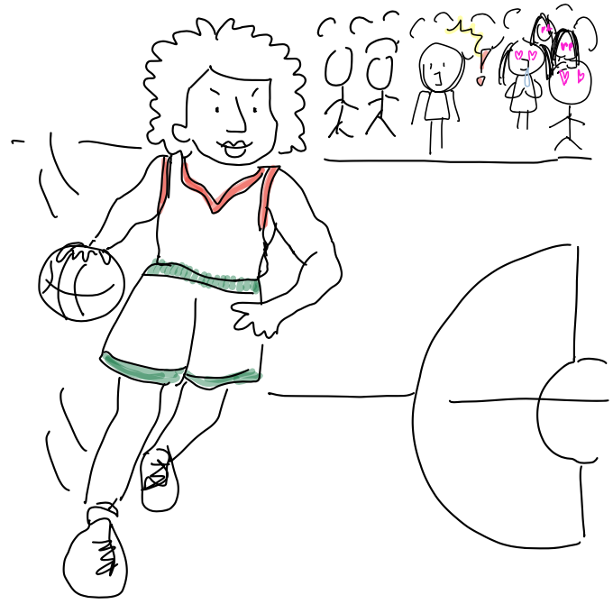
Tarzan plays basketball on Friday night
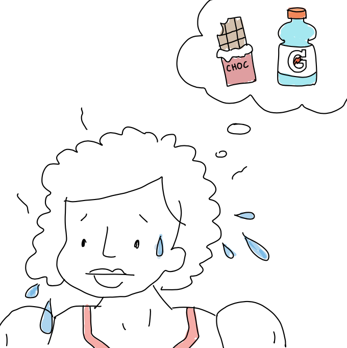
Tarzan plans to get a drink and some snacks
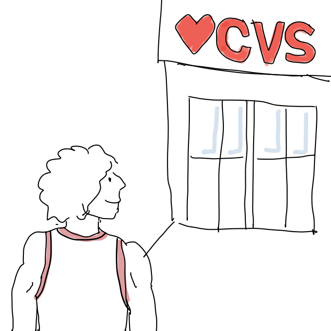
Tarzan goes to a CVS shop on his way home
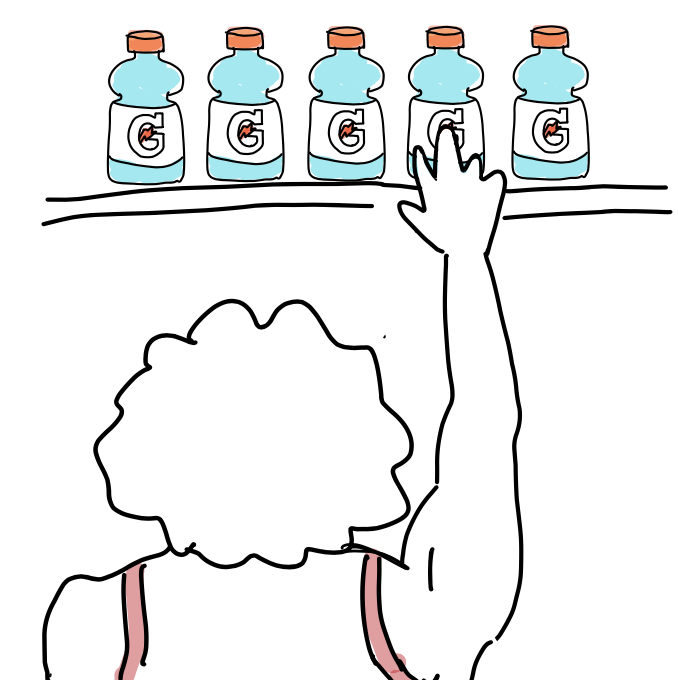
Tarzan grabs a drink from the shelves
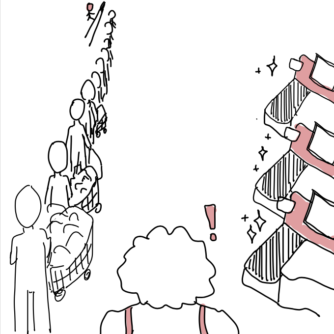
Tarzan goes to self-checkout to avoid the queue
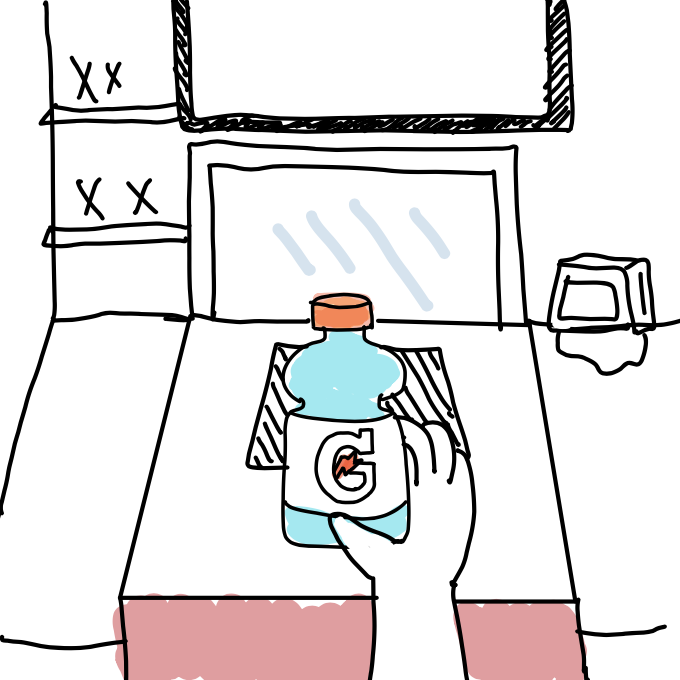
Tarzan puts the drink under the scanner
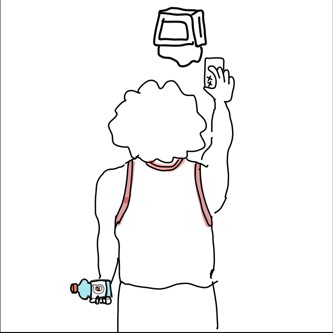
Tarzan swipes with the card machine
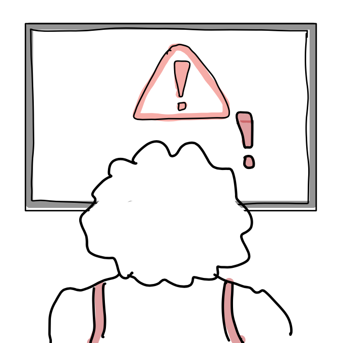
The payment does not go through
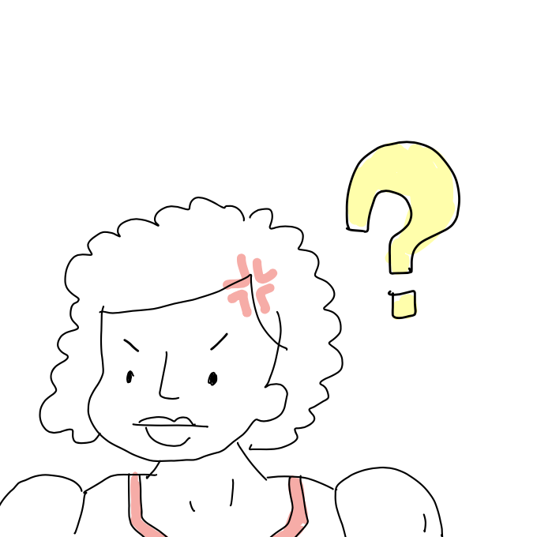
Tarzan is confused and frustrated
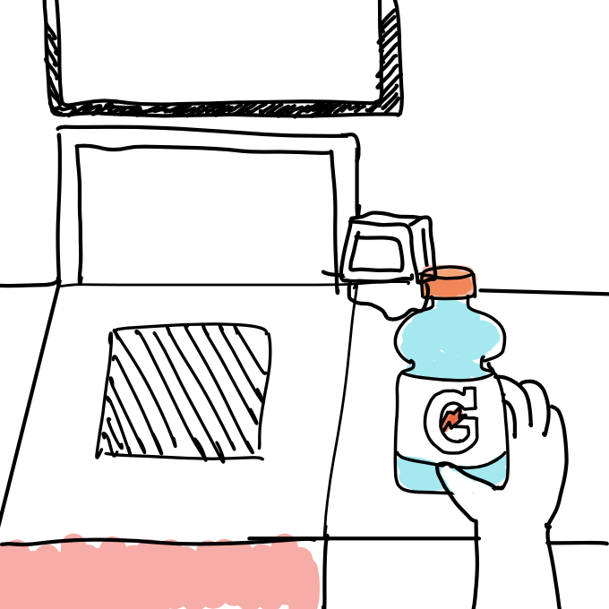
Alert: "Please place your item in the bagging area”
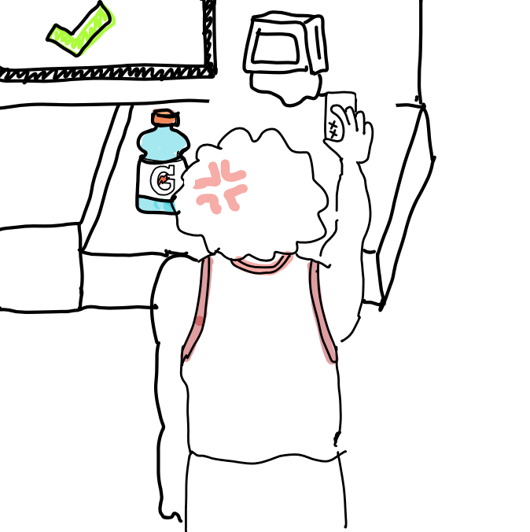
Tarzan swipes again after dropping at the right place